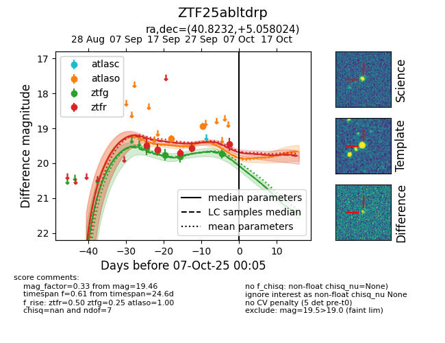
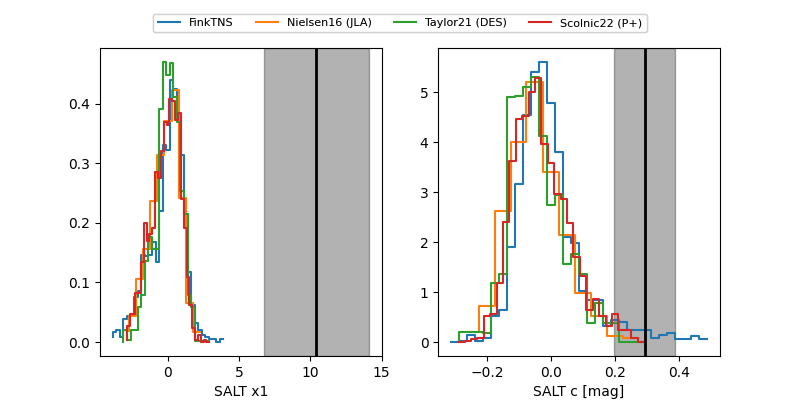

FINK: ZTF25abltdrp
Lasair: ZTF25abltdrp
ALeRCE: ZTF25abltdrp
ZTF25abltdrp (ztf,fink)
equatorial (ra, dec) = (40.8232,+5.05802)
galactic (l, b) = (167.1721,-47.97171)


last atlaso=18.93, ztfg=19.73, ztfr=19.46
2 atlaso, 5 ztfg, 5 ztfr detections